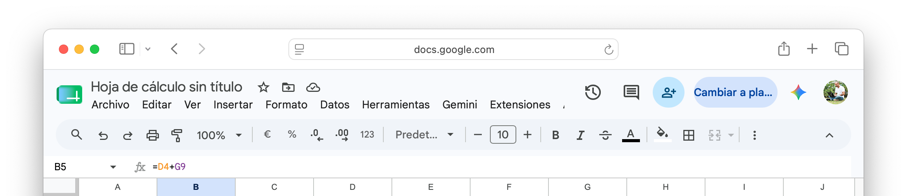
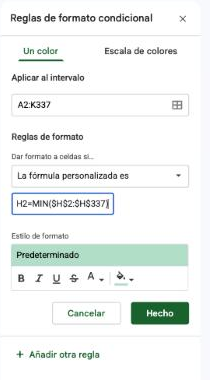

La planilla: crear el archivo y conocer Google Sheets
Antes de trabajar con datos, necesitás el espacio donde van a vivir. Una planilla de cálculo es un archivo organizado en filas y columnas, donde cada celda guarda un dato o una fórmula que calcula algo a partir de otras celdas. La diferencia con anotar números en un papel o en un documento de texto es esa: si cambiás un dato de origen, todo lo que depende de él se recalcula solo, sin que tengas que rehacer las cuentas a mano.


Cuáles existen
Vas a escuchar hablar de "Excel" y de "Sheets" como si fueran lo mismo. Son las dos planillas de cálculo que vas a encontrar en cualquier trabajo, comparten la misma lógica (celdas, filas, columnas, fórmulas) pero no son la misma herramienta.
| Google Sheets | Excel de escritorio | |
|---|---|---|
| Costo | Gratuito con cuenta de Google | Requiere licencia de Microsoft Office |
| Dónde vive el archivo | En la nube (Drive), se guarda solo | En tu computadora (o OneDrive), hay que guardar manualmente |
| Colaboración | Tiempo real, múltiples personas a la vez | Requiere compartir el archivo o usar Excel Online |
| Funciones avanzadas | Cubre la gran mayoría de casos de uso | Tablas dinámicas más potentes, macros, Power Query |
| Ideal para | Trabajo colaborativo, planillas livianas, uso cotidiano | Análisis pesado, archivos grandes, entornos corporativos con Office |
💡 Consejo
En esta materia vamos a trabajar principalmente en Google Sheets porque es gratuito y accesible para todos desde el primer día, y al cerrar cada clase vas a comprobar el mismo trabajo en Excel. Todo lo que aprendas acá (referencias, funciones, formato condicional) se traslada directamente a Excel: las fórmulas son casi idénticas.
Google Sheets: la interfaz
Google Sheets es la planilla de cálculo de Google Workspace, la misma familia de herramientas que ya usaste con Google Docs en el Bloque 2. Es gratuita, funciona en el navegador y no requiere instalar nada. Para crear un archivo nuevo tenés tres caminos:
| Opción | Cómo | Cuándo usarla |
|---|---|---|
| Más rápida | Escribí sheets.new en la barra del navegador y presioná Enter. | Cuando querés arrancar sin abrir Drive. |
| Desde Drive | drive.google.com → botón + Nuevo → Hoja de cálculo de Google. | Cuando ya estás en Drive y querés guardar directamente en una carpeta. |
| Desde Sheets | sheets.google.com → clic en el signo +. | Cuando tenés varios archivos abiertos y querés crear uno más. |
Elementos clave de la interfaz
| Elemento | Dónde está | Para qué sirve |
|---|---|---|
| Barra de fórmulas | Debajo de la barra de menús | Muestra el contenido real de la celda activa: si hay una fórmula, la ves ahí, no el resultado |
| Celda activa | Recuadro con borde grueso | La celda donde vas a escribir o pegar algo ahora mismo |
| Encabezados de fila y columna | Números a la izquierda, letras arriba | Identifican cada celda por su intersección: por ejemplo, B4 |
| Pestañas de hojas | Parte inferior | Un archivo (libro) puede tener varias hojas; cada una es un espacio de trabajo independiente |
| Controlador de relleno | Cuadradito en la esquina inferior derecha de la celda seleccionada | Arrastrándolo, copiás una fórmula o continuás una serie hacia las celdas contiguas |

La interfaz de Sheets recién abierta: barra de fórmulas arriba, celda activa marcada, encabezados de fila y columna, pestañas de hoja abajo.
💡 Idea clave
El autoguardado de Sheets no reemplaza la buena nomenclatura. "Hoja de cálculo sin título" guardada en la raíz de Drive es tan difícil de encontrar como un archivo suelto en cualquier escritorio. Nombrá la planilla en cuanto la creás, con el mismo formato que ya usás desde la Clase 01: AAAA-MM-DD_Informatica_ClaseNN_VN.
El encargo de esta clase
A partir de hoy vas a trabajar sobre un solo archivo que se arma clase a clase: cada actividad de hoy, y de las tres clases de planilla de cálculo que siguen, le agrega algo nuevo al mismo archivo. Es el mismo caso durante todo el bloque, así que conviene entenderlo bien desde acá.
Hola. Te paso la exportación del sistema de inscripciones a talleres tal como la descarga la persona de administración: una lista larga, cargada a mano durante meses, con errores de tipeo por todos lados. Necesitamos saber cuánto facturamos realmente este cuatrimestre, porque tenemos dos números que no coinciden y ninguno de los dos nos cierra.
Con que armes una planilla prolija con estos datos y nos digas el total real, alcanza por ahora.
Gracias.
Centro Cultural La Usina
Es un centro cultural comunitario con tres sedes (Centro, Norte y Sur) que dicta ocho talleres. Vas a trabajar con la exportación real de inscripciones del cuatrimestre: Inscripciones_LaUsina_202606.csv, separada por punto y coma, con los aranceles en formato argentino y bastantes errores de carga adentro. Son 336 filas y 10 columnas. La vas a descargar completa en la Actividad 02, pero para arrancar alcanza con cargar a mano unas pocas filas.
| Taller | Docente | Sede | Arancel base |
|---|---|---|---|
| Cerámica | Valeria Núñez | Sede Centro | $14.000 |
| Guitarra | Emiliano Pais | Sede Centro | $12.000 |
| Fotografía analógica | Rocío Beltrán | Sede Norte | $16.000 |
| Yoga | Marina Suárez | Sede Sur | $10.000 |
| Huerta orgánica | Tomás Leiva | Sede Norte | $9.000 |
| Serigrafía | Julieta Campos | Sede Centro | $15.000 |
| Percusión | Braian Ortiz | Sede Sur | $11.000 |
| Costura creativa | Noelia Ferreyra | Sede Norte | $13.000 |
💡 Consejo
Esta tabla de talleres, docentes y aranceles es solo para que entiendas de dónde sale cada arancel de la exportación. Por ahora no hace falta cargarla.
Crear el archivo y cargar las primeras inscripciones
Esta va a ser tu planilla de trabajo para las próximas cuatro clases: cada actividad le agrega algo nuevo, nunca arrancás de cero.
- Abrí Drive → carpeta "Informática - UNQ" → subcarpeta "Clase 08" (creala si no existe).
- Dentro de esa carpeta, creá una hoja de cálculo nueva. Nombrala exactamente:
2026-XX-XX_Informatica_Clase08_V01(reemplazá XX por la fecha de hoy). - Renombrá la primera hoja como
DATOS(doble clic sobre la pestaña, abajo a la izquierda). - Desde
A1, cargá a mano estas ocho inscripciones, tal como figuran en el archivo real. No están elegidas al azar: cada una muestra algún error típico de carga. No corrijas nada todavía. En la inscripciónINS-20016, escribíCerámicaseguido de un espacio (no se ve, pero está), y enINS-20117dejá la sede vacía. Donde hay una celda vacía en la tabla, dejala vacía.id_inscripcion fecha_inscripcion taller sede alumno dni arancel beca_pct estado medio_pago INS-20023 10/04/2026 Serigrafía Sede Centro Martina Rojas 39360154 15.000,00 0 Anulada Transferencia INS-20114 08/05/2026 Fotografía analógica Sede Norte Dante Correa 33084264 16.000,00 0 confirmada Efectivo INS-20016 16/04/2026 Cerámica Sede Centro Mora Ibáñez 42475318 14.000,00 30 Confirm. Efectivo INS-20188 2026-06-02 Cerámica Sede Centro Pilar Vega 44090160 14.000,00 0 CONFIRMADA Efectivo INS-20251 2026-05-12 Serigrafía Sede Centro Ariadna López 44684715 15.000,00 Confirmada Efectivo INS-20321 05/05/2026 Huerta orgánica Sede Norte Catalina Castro 44415272 9.000,00 0 confirmada Tarjeta INS-20139 22/05/2026 Yoga Sede Sur Abril Núñez 34149521 10.000,00 20 Confirm. Transferencia INS-20117 14/03/2026 Guitarra Olivia Torres 31294051 12.000,00 60 Confirmada Tarjeta - Anotá aparte (en una celda o en un papel) todo lo raro que notes con solo mirar estas ocho filas. Pistas para no dejar nada afuera: el formato de los aranceles y de las fechas, un taller con un espacio de más, el campo
estadoescrito de varias formas, una sede vacía, una beca vacía y una beca más alta que las demás. Lo vas a ir resolviendo, uno por uno, durante las próximas cuatro clases.
Formato de celdas: alineación, fuentes, bordes, relleno y número
Las ocho filas que acabás de cargar son datos correctos técnicamente (Sheets los acepta), pero no son legibles: no hay forma de distinguir el encabezado del contenido, los números pueden quedar pegados a la izquierda como si fueran palabras, y no hay ningún límite visual entre una fila y la siguiente. El formato de celdas no cambia ningún dato: cambia cómo se lee.
Las cinco familias de formato
En Sheets casi todo el formato está a mano en la barra de herramientas, y el resto en el menú Formato. Seleccioná primero el rango y después aplicá el cambio. En Excel viven en la pestaña Inicio, y además hay un cuadro único: Ctrl+1 (Mac: ⌘+1) abre Formato de celdas, con una solapa por cada familia.
| Familia | Qué resuelve | En Google Sheets | En Excel |
|---|---|---|---|
| Número | Cómo se muestra un valor: moneda, porcentaje, fecha, texto plano | Íconos $, % y 123 de la barra, o Formato > Número | Inicio > grupo Número, o solapa Número del cuadro |
| Alineación | Horizontal (izquierda, centro, derecha) y vertical (arriba, medio, abajo) del contenido dentro de la celda | Íconos de alineación de la barra, o Formato > Alineación | Inicio > grupo Alineación |
| Fuente | Tipo de letra, tamaño, negrita, cursiva, color del texto | Menú de fuente y íconos de la barra | Inicio > grupo Fuente |
| Bordes | Líneas entre celdas: todas, solo el contorno, solo horizontales | Ícono de cuadrícula (Bordes) de la barra | Inicio > Bordes |
| Relleno | Color de fondo de la celda. Es fijo: no depende de una regla | Ícono de balde de pintura (Color de relleno) | Inicio > Color de relleno |
💡 Idea clave
Texto a la izquierda, números a la derecha: es el comportamiento por defecto de Sheets, y por eso sirve como diagnóstico. Si cargaste un número y ves que quedó alineado a la izquierda (como puede pasar con el arancel de tus ocho filas), Sheets lo está interpretando como texto, no como número, aunque a simple vista parezca uno. Si en cambio quedó a la derecha, tu archivo ya tiene configuración regional Argentina y leyó bien el punto de miles y la coma decimal.
Encabezado prolijo y primera mirada al número
- Seleccioná la fila 1 (los encabezados:
id_inscripcion,fecha_inscripcion, etc.) y aplicá negrita, alineación centrada y un color de relleno sólido distinto del resto de la tabla. - Aplicá bordes a todo el rango
A1:J9: contorno completo más líneas horizontales entre filas (no verticales entre columnas, para que se lea más como tabla y menos como grilla). - Mirá hacia dónde quedó alineada la columna
arancel. Sea cual sea, seleccionala y alineala a la derecha con los íconos de la barra, para practicar el comando. Si había quedado a la izquierda, el dato de fondo sigue siendo texto: vas a corregirlo en la Actividad 05, cuando importes el archivo completo. - Descargá el archivo completo desde Inscripciones_LaUsina_202606.csv (clic derecho → Guardar como, si tu navegador lo abre en la pestaña en vez de descargarlo). Son 336 filas: no lo cargues manualmente, lo vas a importar en la Actividad 05.
Filas, columnas y hojas: insertar, eliminar y organizar
Un archivo de trabajo real casi nunca queda con la estructura exacta con la que arrancó: falta una columna, sobra una fila, hace falta una hoja nueva para no mezclar el detalle con el resumen. Estas operaciones se hacen todas desde el mismo lugar: clic derecho sobre el encabezado de fila o columna, o sobre la pestaña de la hoja.
Insertar y eliminar filas o columnas
| Necesitás | Cómo |
|---|---|
| Insertar una fila o columna nueva | Clic derecho sobre el número de fila (o la letra de columna) → Insertar 1 fila arriba/abajo (o columna a la izquierda/derecha) |
| Eliminar una fila o columna completa | Clic derecho sobre el número o la letra → Eliminar fila / Eliminar columna |
| Cambiar el ancho de una columna | Arrastrar el límite entre dos letras de columna, o clic derecho → Cambiar tamaño de columna |
| Ocultar sin borrar | Clic derecho → Ocultar columna (distinto de eliminar: el dato sigue ahí, solo no se ve) |
⚠️ Atención
Eliminar una fila o columna corre todo lo que está debajo o a la derecha, y puede romper una fórmula que hacía referencia a esa celda por su dirección exacta. Antes de eliminar, revisá si alguna fórmula de la planilla apunta justo a esa fila o columna.
Varias hojas dentro de un mismo libro
Un archivo de Sheets (un "libro") puede tener varias hojas, cada una con su propio nombre y su propio contenido, pero todas dentro del mismo archivo. Es la forma correcta de separar, por ejemplo, el detalle de datos de un panel de resumen, sin mezclar todo en una sola pestaña gigante.
| Necesitás | Cómo |
|---|---|
| Insertar una hoja nueva | Ícono + abajo a la izquierda, al lado de las pestañas |
| Renombrar una hoja | Doble clic sobre el nombre de la pestaña, escribir el nombre nuevo, Enter |
| Mover una hoja | Arrastrar la pestaña hacia la izquierda o la derecha |
| Duplicar una hoja | Clic derecho sobre la pestaña → Duplicar (útil para probar algo sin arriesgar el original) |
| Copiar una hoja a otro archivo | Clic derecho sobre la pestaña → Copiar a → hoja de cálculo nueva o existente |
| Referenciar una celda de otra hoja | =NombreDeHoja!A1 (el signo de exclamación separa el nombre de hoja de la celda) |
Organizar el archivo antes de que crezca
- En
DATOS, insertá una columna nueva entreid_inscripcionyfecha_inscripcion, llamadaorden, y cargala con la serie1,2,3... Escribí1y2en las dos primeras celdas, seleccionalas y arrastrá el controlador de relleno hasta la fila 9. - Ajustá el ancho de la columna
alumnoarrastrando el límite de la letra, hasta que ningún nombre quede cortado. - Creá una hoja nueva y renombrala
RESUMEN: va a ser el panel de indicadores, en vez de mezclarlo con el detalle deDATOS. - En una celda de
RESUMEN(por ejemploA1), escribí=DATOS!A2para confirmar que referenciar una celda de otra hoja funciona, y borrala después: era solo para comprobarlo. - Duplicá la hoja
DATOS(clic derecho sobre la pestaña → Duplicar), movela al final arrastrando su pestaña y eliminala. Así comprobás que podés probar cosas sobre una copia sin arriesgar el original.
Edición: copiar, pegar, series, buscar y ordenar
Con la estructura armada, falta lo que más se hace en el día a día de una planilla: mover y duplicar contenido, rellenar series, corregir errores en masa y ordenar. Son los comandos de edición, y tres de ellos (pegado especial, buscar y reemplazar, ordenar) son los que más tiempo ahorran cuando el archivo llega sucio.
Copiar, cortar y pegar
| Acción | Windows | Mac | Qué hace |
|---|---|---|---|
| Copiar | Ctrl+C | ⌘+C | Duplica el contenido: el original queda donde estaba |
| Cortar | Ctrl+X | ⌘+X | Mueve el contenido: sale de su lugar de origen |
| Pegar | Ctrl+V | ⌘+V | Pega todo: valor o fórmula, y también el formato |
| Pegar solo valores | Ctrl+Shift+V | ⌘+Shift+V | Pega el resultado, sin fórmula ni formato |
| Pegar solo formato | Ctrl+Alt+V | ⌘+Option+V | Pega el aspecto (negrita, relleno, bordes), sin el contenido |
⚠️ Atención
Copiar y cortar no se comportan igual con las fórmulas. Al copiar una fórmula, las referencias relativas se ajustan a la nueva posición. Al cortar y pegar, la fórmula se mueve tal cual, sin ajustar nada.
Pegado especial
El menú Edición > Pegado especial deja elegir qué parte del contenido copiado se pega. Es la herramienta para separar lo que una celda *dice* de lo que una celda *parece*.
| Opción | Cuándo conviene |
|---|---|
| Pegar solo valores | Para "congelar" el resultado de una fórmula, o para traer datos de otra planilla sin arrastrar su formato |
| Pegar solo formato | Para copiar el aspecto de una celda a un rango entero sin tocar sus datos |
| Pegar solo fórmula | Para trasladar el cálculo sin el aspecto |
| Pegar solo validación de datos o solo formato condicional | Para extender una regla de control a otro rango |
| Pegar transpuesto | Para girar un rango: las filas pasan a ser columnas y al revés |
Rellenar y series
El controlador de relleno (el cuadradito de la esquina de la selección) no solo copia: continúa series. Si la planilla reconoce un patrón en lo que seleccionaste, lo sigue.
| Si escribís y arrastrás | Obtenés |
|---|---|
1 y 2 (seleccionando las dos celdas) | 3, 4, 5... |
2 y 4 | 6, 8, 10...: sigue el paso que marcaste |
01/03/2026 | Los días siguientes, corridos |
lunes | martes, miércoles...: reconoce los días de la semana y los meses |
Con doble clic sobre el controlador, la serie o la fórmula se extiende sola hasta la última fila que tenga datos en la columna vecina. Y para repetir hacia abajo o hacia la derecha el contenido de la primera celda de una selección: Ctrl+D / Ctrl+R (Mac: ⌘+D / ⌘+R).
Buscar y reemplazar
Con Ctrl+H (Mac: ⌘+Shift+H) se abre el cuadro Buscar y reemplazar. Corrige en un paso lo que a mano llevaría una hora: una palabra mal escrita en cien celdas, un espacio de más, un nombre que cambió.
| Opción del cuadro | Para qué sirve |
|---|---|
| Buscar / Reemplazar con | El texto a encontrar y el texto que lo reemplaza (si lo dejás vacío, borra lo encontrado) |
| Buscar en | Todas las hojas, esta hoja o un rango específico. Conviene acotar al rango que querés tocar |
| Coincidir mayúsculas y minúsculas | Por defecto la búsqueda no distingue mayúsculas |
| Coincidir con todo el contenido de la celda | Solo encuentra celdas cuyo contenido completo es el texto buscado, no las que lo contienen |
| Usar expresiones regulares | Permite buscar patrones. Por ejemplo, +$ encuentra uno o más espacios al final de una celda |
⚠️ Atención
"Reemplazar todo" modifica el archivo de una sola vez. Acotá siempre el rango, mirá cuántas celdas dice haber modificado y, si el número no es el esperado, deshacé con Ctrl+Z (Mac: ⌘+Z).
Ordenar
Para ordenar una tabla entera, seleccioná todo su rango y usá Datos > Ordenar rango > Opciones avanzadas de ordenación de rangos. Tildá "Los datos tienen una fila de encabezado" y elegí la columna y el sentido (A → Z o Z → A). Se pueden agregar más columnas de criterio.
⚠️ Atención
Ordená siempre todas las columnas de la tabla a la vez. Si ordenás una sola columna, sus valores se mueven y el resto de la fila se queda atrás: cada dato queda con la fila equivocada, y no hay mensaje de error. Por eso conviene tener una columna orden con 1, 2, 3...: ordenando por ella volvés al orden original. Y para que un orden de columna completa no arrastre el encabezado, inmovilizá la fila 1 con Ver > Inmovilizar > 1 fila.
Imágenes y objetos
Una planilla también puede llevar imágenes y dibujos: un logo, una captura, una flecha que señala un dato. El menú Insertar ofrece dos formas de poner una imagen:
| Opción | Cómo se comporta |
|---|---|
| Insertar imagen en celda | Se achica para entrar en la celda y se mueve y ordena con ella, como un dato más |
| Insertar imagen sobre celdas | Flota por encima de la grilla: la movés y cambiás de tamaño libremente, sin afectar las celdas de abajo |
| Dibujo | Formas, flechas y cuadros de texto armados con el editor de dibujo de Google |
Probar la edición sobre las ocho filas
Antes de aplicar nada sobre el archivo completo, practicá cada comando sobre las ocho filas de prueba, en una hoja descartable.
- Creá una hoja nueva llamada
PRUEBAS. Copiá el encabezado deDATOS(A1:K1) y pegalo enA1dePRUEBASconCtrl+V. Pegalo otra vez enA3, pero solo con valores (Ctrl+Shift+V): tiene que llegar sin negrita ni relleno. Y una tercera vez enA5, con Edición > Pegado especial > Pegar solo formato: llegan el relleno y la negrita, sin texto. - En
PRUEBAS, probá tres series: escribí01/03/2026enA8y arrastrá hastaA14(días corridos);lunesenB8y arrastrá (los días de la semana);2y4enC8yC9, seleccionalas y arrastrá (6, 8, 10...). - Volvé a
DATOS. Abrí Buscar y reemplazar (Ctrl+H), tildá "Usar expresiones regulares", buscá+$(uno o más espacios al final del texto), dejá "Reemplazar con" vacío, y acotá al rango de la columnataller(D2:D9). Reemplazá todo. Sheets informa cuántas celdas modificó: con tus ocho filas tiene que ser una, la deINS-20016. - Inmovilizá la fila 1 (Ver > Inmovilizar > 1 fila). Seleccioná
A1:K9, ordená poralumnode A a Z con la opción avanzada (con fila de encabezado) y mirá que cada fila se movió completa. Volvé al orden original ordenando porordende menor a mayor. - Eliminá la hoja
PRUEBAS.
La planilla de cálculo como herramienta para pensar con datos
Un documento de texto organiza ideas. Una planilla de cálculo organiza datos que se relacionan entre sí mediante operaciones. La diferencia no es cosmética: en una planilla, cuando cambiás un dato de origen, todo lo que depende de él se recalcula solo.
Esa es la ventaja central de la herramienta: separar el dato (lo que cargás) de la fórmula (lo que calculás a partir de ese dato). Si en algún momento aprendiste a usar una calculadora para resolver un problema y después tuviste que "empezar de nuevo" porque cambió un número, ya sabés por qué esto importa.
Hasta acá trabajaste con ocho filas cargadas a mano. La coordinación te pasó 336. Antes de escribir una sola fórmula sobre el archivo completo, preguntate: ¿qué dato es fijo (no cambia fila a fila) y cuál cambia? Esa pregunta es la que vas a responder más abajo, con referencias relativas y absolutas.
Celdas, rangos y referenciación
Cada celda se nombra por la intersección de su columna (letra) y su fila (número): A1, C12, AB3. Un rango es un conjunto de celdas contiguas y se escribe con dos puntos: A2:A337 incluye A2, A3, A4... hasta A337.
⚠️ Atención
Antes de aplicar cualquier función o formato, seleccioná primero el rango correcto. La mayoría de los errores en planillas nuevas vienen de aplicar algo sobre el rango equivocado: una fila de más, una columna de menos, y con 336 filas ese error es mucho más fácil de cometer que con ocho.
Operaciones y porcentajes
Toda fórmula empieza con =. Las operaciones usan los símbolos de siempre, y respetan el orden matemático: primero lo que está entre paréntesis, después potencias, multiplicaciones y divisiones, y al final sumas y restas.
| Operación | Símbolo | Ejemplo | Resultado |
|---|---|---|---|
| Suma | + | =14000+500 | 14.500 |
| Resta | - | =14000-500 | 13.500 |
| Multiplicación | * | =14000*2 | 28.000 |
| División | / | =14000/2 | 7.000 |
| Potencia | ^ | =2^10 | 1.024 |
| Porcentaje | % | =14000*20% | 2.800 |
Un descuento porcentual se calcula con la parte que sí se paga: un arancel de $14.000 con una beca del 20% es =14000*(1-20%), o sea =14000*(1-20/100). Esa es la lógica de la columna que vas a armar en la Actividad 05, con las celdas en lugar de los números.
Importar el archivo completo
- Antes de importar nada, fijá la configuración regional del archivo en Archivo → Configuración → Configuración regional y elegí Argentina. Sin este paso, Sheets puede seguir leyendo el punto de miles y la coma decimal del CSV al revés.
- Andá a Archivo → Importar → Subir y seleccioná el
Inscripciones_LaUsina_202606.csvque descargaste. En la ubicación de importación, elegí Insertar hoja(s) nueva(s), dejá el separador en detección automática y tildada la opción de convertir texto en números y fechas. Va a aparecer una hoja nueva: renombralaCRUDO. Tiene las 336 filas y las 10 columnas originales, deid_inscripcionamedio_pago. - En
DATOS, seleccioná el rangoA2:K9(las ocho filas de prueba, sin el encabezado) y borrá el contenido con Suprimir, dejando la fila 1 y el formato intactos. - En
CRUDO, copiá la columnaid_inscripcion(A2:A337) y pegala enDATOS!A2. Después copiá el resto de las columnas (B2:J337, defecha_inscripcionamedio_pago) y pegalas enDATOS!C2: se corren una columna a la derecha porque enDATOSla columnaBesorden, queCRUDOno tiene. - Completá la columna
ordenhasta la fila 337: seleccionáB2:B3(que ya tienen1y2) y hacé doble clic sobre el controlador de relleno. - Extendé el formato de las filas de datos: copiá
A2:K2, seleccionáA3:K337y usá Edición > Pegado especial > Pegar solo formato. El encabezado ya lo tenés. - Revisá la columna
arancel: ahora Sheets la interpreta como número (alineada a la derecha). Mirá también la columnafecha_inscripcion: si Sheets reconoció los dos formatos, todas las fechas quedan alineadas a la derecha y con el mismo aspecto. Si alguna quedó a la izquierda, es texto: anotala. - Aplicá lo que practicaste en la Actividad 04, ahora sobre las 336 filas. Con
Ctrl+H, expresiones regulares y rangoD2:D337, reemplazá+$por nada: Sheets tiene que informar 6 celdas modificadas (los talleres con un espacio de más). Después, en el rangoE2:E337(sede), tildá "Coincidir con todo el contenido de la celda", destildá las expresiones regulares y reemplazácentroporSede Centro(2 celdas) ynorteporSede Norte(1 celda). Quedan 4 sedes vacías: las dejás como están, es un dato que falta. - Borrá la hoja
CRUDO: ya cumplió su función y no tiene sentido mantener duplicado todo el archivo.
💡 Consejo
El doble clic sobre el controlador de relleno es distinto de arrastrarlo: en vez de que vos definas hasta dónde llega, Sheets mira la columna de al lado y completa automáticamente hasta la última fila con datos. Es la forma correcta de rellenar una serie o una fórmula sobre cientos de filas sin arrastrar a mano.
Un primer cálculo, sin funciones
Con las 336 filas ya en DATOS, vas a calcular el importe de cada inscripción multiplicando y restando celda por celda, antes de conocer las funciones de más abajo.
- Agregá una columna
importe_bruto(laL) y, para el primer registro, escribí la fórmula que aplica la beca sobre el arancel:=H2*(1-I2/100). Las filas conbeca_pctvacío tienen que dar unimporte_brutoigual al arancel completo, sin error: una celda vacía se comporta como 0 en una operación aritmética. - Copiá esa fórmula hacia abajo con doble clic en el controlador de relleno, para que se extienda sola hasta la fila 337. Aplicale formato de moneda a la columna (Formato > Número > Moneda).
- Pensá antes de seguir: con 336 filas, sumar el total general escribiendo
=L2+L3+L4+...celda por celda ya no es viable. Anotá esa limitación aparte, la vas a resolver en la sección de funciones.
Referencias relativas y absolutas
Esta es la distinción más importante de la clase, y la que más confunde a quien recién empieza.

La barra de fórmulas muestra la fórmula real, no el resultado: acá, B5 vale lo que sea que dé D4+G9.
Referencia relativa: el comportamiento por defecto
Cuando escribís una fórmula como =A1+A2 y la copiás hacia abajo con el controlador de relleno, Sheets no repite literalmente "A1+A2" en cada fila. Ajusta la referencia según la posición relativa: en la fila siguiente pasa a ser =A2+A3, después =A3+A4, y así sucesivamente.
Esto es exactamente lo que querés la mayoría de las veces: si tenés una columna de precios y otra de cantidades, y calculás el total fila por fila, cada fila debe multiplicar sus propios datos, no siempre los mismos.
Referencia absoluta: cuando un dato no debe moverse
El problema aparece cuando una fórmula necesita referirse siempre a la misma celda, sin importar hacia dónde la arrastres. El caso clásico: convertir una lista de precios en pesos a dólares, usando una única celda con la cotización del dólar.
Si escribís =B2/D2 (precio en pesos dividido cotización) y arrastrás hacia abajo, Sheets también va a mover D2 a D3, D4... y esas celdas están vacías. El resultado se rompe.
La solución es fijar esa referencia con el signo $ antes de la fila, la columna, o ambas:
| Notación | Qué queda fijo | Cuándo usarla |
|---|---|---|
B2 | Nada, referencia relativa | Cuando cada fila debe operar con sus propios datos |
$B2 | Columna fija, fila libre | Al arrastrar hacia los costados, siempre apunta a la columna B |
B$2 | Fila fija, columna libre | Al arrastrar hacia abajo, siempre apunta a la fila 2 |
$B$2 | Columna y fila fijas, referencia absoluta | El dato es un valor único de referencia para toda la planilla (cotización, IVA, un total) |
💡 Consejo: la tecla F4
No hace falta escribir los símbolos $ a mano. Mientras editás una fórmula, hacé clic sobre la referencia de celda y presioná F4 (en Mac: ⌘+T o Fn+F4 según el teclado). Cada vez que la apretás, alterna entre los cuatro tipos de referencia: B2 → $B$2 → B$2 → $B2 → B2.
⚠️ Atención
Si tu planilla arroja errores #N/A o valores sin sentido al arrastrar una fórmula, la primera sospecha debería ser una referencia que necesitabas fija y quedó relativa.
Hay una segunda forma de fijar un dato: no escribirlo dentro de ninguna fórmula ni dejarlo suelto en la hoja de datos, sino alojarlo en una hoja propia de parámetros. Una fórmula puede apuntar a otra hoja con la misma lógica de $: =L2-PARAMETROS!$B$2.
El costo administrativo, con referencia absoluta
El centro cultural cobra un costo administrativo fijo por cada inscripción, sin importar el taller ni el arancel: son $500 que se descuentan del importe antes de que quede disponible para la sede. Es un único valor, igual para las 336 filas: el caso ideal para practicar una referencia absoluta.
- Creá una hoja nueva y renombrala
PARAMETROS. EnA1escribíparametroy enB1valor. EnA2,Costo administrativo por inscripción, y enB2, el valor500. - En
DATOS, agregá una columnaimporte_neto(laM) y calculá, para el primer registro, elimporte_brutomenos el costo administrativo:=L2-PARAMETROS!$B$2. Aplicale formato de moneda. - Copiá la fórmula hacia abajo con doble clic en el controlador de relleno. Si alguna fila da un resultado sin sentido, revisá que hayas fijado
B2con$(o presionáF4sobre la referencia). - Cambiá el valor de
PARAMETROS!B2a600y confirmá que las 336 filas deimporte_netose recalculan solas. Volvé a dejarlo en500antes de seguir. - En una hoja nueva descartable, armá una tabla chica para practicar la referencia mixta: fila 1 con dos aranceles de ejemplo (
B1:C1) y columna A con dos porcentajes de beca (A2:A3). EnB2, calculá el arancel con beca aplicada con=B$1*(1-$A2)y copiala hacia toda la tabla (derecha y abajo con un solo arrastre). Después eliminá la hoja.
Funciones matemáticas esenciales
Qué es una función
Una fórmula como =A1+A2+A3+A4+A5 funciona, pero se vuelve inmanejable si en vez de 5 celdas tenés 500. Una función es una fórmula predefinida por Sheets que resuelve una operación común con una sintaxis breve.
Toda función tiene la misma estructura:
- Empieza siempre con
=. - El nombre de la función va seguido de un paréntesis de apertura.
- Los argumentos, los datos sobre los que opera, van dentro del paréntesis, separados por punto y coma o especificados como rango con dos puntos.
- Cierra con paréntesis.
=SUMA(A1:A5) es equivalente a =A1+A2+A3+A4+A5, pero sigue funcionando igual de bien si el rango tiene 5 celdas o 5.000.
Las siete funciones que tenés que dominar hoy
| Función | Qué hace | Ejemplo |
|---|---|---|
SUMA | Suma todos los valores numéricos del rango | =SUMA(B2:B10) |
PROMEDIO | Calcula el promedio (media aritmética) del rango | =PROMEDIO(B2:B10) |
CONTAR | Cuenta cuántas celdas del rango contienen números | =CONTAR(B2:B10) |
CONTARA | Cuenta cuántas celdas del rango no están vacías (números, texto, lo que sea) | =CONTARA(A2:A10) |
MAX / MIN | Devuelven el valor más alto / más bajo del rango | =MAX(B2:B10) / =MIN(B2:B10) |
POTENCIA | Eleva un número a un exponente | =POTENCIA(2;10) → 1024 |
RAIZ | Calcula la raíz cuadrada de un número | =RAIZ(144) → 12 |
⚠️ Atención: CONTAR vs. CONTARA
CONTAR solo cuenta celdas numéricas. Si tu rango tiene nombres de personas y querés saber cuántas filas cargadas hay, CONTAR te va a devolver 0: necesitás CONTARA. Es uno de los errores más comunes al empezar.
El ícono de autosuma
Sheets tiene un ícono de funciones (Σ) en la barra de herramientas que ofrece SUMA, PROMEDIO, CONTAR, MAX y MIN y detecta el rango de números más probable. Es útil como punto de partida, pero siempre conviene verificar que el rango detectado sea el correcto antes de confirmar.
💡 Consejo
Podés escribir la función completa a mano o dejar que Sheets te sugiera el autocompletado apenas empezás a tipear =SUM: aparece una ayuda con la sintaxis exacta y una breve descripción. Usala para no memorizar el orden de los argumentos de memoria.
El panel RESUMEN: los dos números que no cierran
Volvé al correo de la Actividad 01: "tenemos dos números que no coinciden y ninguno de los dos nos cierra". Con las funciones de hoy podés construir el primero de esos dos números, y vas a ver por qué el archivo todavía no alcanza para responder la pregunta.
- En
RESUMENarmá una tabla de dos columnas,indicadoryvalor. Calculá conSUMAel total de la columnaaranceldeDATOS, sobre las 336 filas, y llamalo "Total de aranceles (sin becas)". Te tiene que dar $4.035.000. - Calculá con
SUMAel total deimporte_brutoy llamalo "Total con becas aplicadas". Te tiene que dar $3.525.000. Es el número que suma el sistema de la coordinación, y es un número exagerado: incluye inscripciones Anuladas y Pendientes, filas con el mismoid_inscripcionrepetido y aranceles cargados con error. Para excluir esos casos hace falta sumar bajo una condición, no toda la columna. - Con
PROMEDIO,MAXyMINsobre la columnaarancel, agregá tres indicadores más. El promedio te tiene que dar $12.009 y el máximo $16.000. El mínimo te va a dar -$14.000: un número negativo, algo imposible para un arancel real. Es la primera pista concreta y verificable de que hay errores de carga en el archivo. - Con
CONTARsobrearancel, confirmá que el resultado es 336: todas las celdas son numéricas, gracias al cambio de configuración regional de la Actividad 05. ConCONTARAsobreid_inscripcion, confirmá también 336. - Con
CONTARAsobrebeca_pct, agregá el indicador "Inscripciones con beca cargada". Te tiene que dar 281. Restá 336 menos 281 en una celda aparte: el resultado, 55, son las inscripciones con la celda de beca vacía, sin dato, no becas cargadas en 0%. Es una diferencia importante: un valor vacío no es lo mismo que un valor en cero. - Con fines de práctica (no forma parte del panel de La Usina, pero está en el programa de la materia), calculá en una celda aparte
=POTENCIA(2;10)y=RAIZ(144), y confirmá los resultados: 1024 y 12.
Formato condicional
Qué resuelve
Una tabla con cien filas de números es difícil de leer a simple vista. El formato condicional aplica automáticamente un estilo visual (color de fondo, color de fuente) a las celdas que cumplen una condición que vos definís. No cambia el dato, cambia cómo se ve.
Cómo aplicarlo
- Seleccioná el rango sobre el que querés aplicar la regla.
- Andá a Formato > Formato condicional. Se abre un panel a la derecha.
- Elegí entre dos tipos de regla: la pestaña Escala de colores asigna un gradiente (por ejemplo, de rojo a verde) según el valor relativo de cada celda dentro del rango; la pestaña Un color aplica un formato fijo (por ejemplo, fondo rojo) a las celdas que cumplen una condición específica: "es mayor que", "es menor que", "el texto contiene", o una fórmula personalizada.
- Definí la condición y el formato a aplicar, y hacé clic en Hecho.

El panel de Formato condicional: elegís el rango, la condición ("Es igual a", "Es mayor que"...) y el estilo: acá, fondo rojo para marcar un caso puntual.
Casos de uso frecuentes
| Necesitás | Tipo de regla |
|---|---|
| Ver de un vistazo qué meses gastaron más y cuáles menos | Escala de color |
| Marcar en rojo los valores que superan un presupuesto | Regla de un solo color · "Es mayor que" |
| Resaltar en verde los valores por debajo de un mínimo | Regla de un solo color · "Es menor que" |
| Marcar filas que contienen una palabra específica (ej. "pendiente") | Regla de un solo color · "El texto contiene" |
| Marcar una fila entera según el valor de una de sus celdas | Fórmula personalizada |
💡 Consejo
El formato condicional se actualiza solo cuando cambian los datos, no hace falta reaplicarlo. Es la razón por la que conviene usarlo en vez de pintar celdas a mano: si el dato cambia, el color se ajusta automáticamente.
⚠️ Atención
El formato condicional se aplica al rango que tenías seleccionado en el momento de crear la regla. Si después agregás filas nuevas por fuera de ese rango, no van a heredar el formato: hay que editar la regla y extender el rango. Y si dos reglas coinciden sobre la misma celda, gana la que está más arriba en la lista del panel.
Formato condicional sobre las inscripciones
- En
DATOS, seleccioná la columnaimporte_bruto(sin encabezado, hasta la fila 337) y aplicá una escala de color para ver de un vistazo los importes más altos y más bajos. - Seleccioná la columna
arancely aplicá una regla de un solo color, roja, condición "Es menor o igual que"0. Esta regla marca de una sola vez dos de los defectos de carga que anotaste en la Actividad 01: los aranceles en cero por error y los aranceles negativos. Tienen que quedar resaltadas 11 celdas. - Sobre
beca_pct, aplicá una regla de un solo color, amarilla, condición "Es mayor que"50. La política del centro autoriza becas de hasta el 50%: esta regla marca las inscripciones que la superan. Tienen que quedar resaltadas 10 filas, todas del taller Guitarra; si te queda otro número, revisá la condición. - Seleccioná el rango
A2:K337y aplicá una cuarta regla con fórmula personalizada que pinte de violeta la fila completa del arancel mínimo:=$H2=MIN($H$2:$H$337). El$delante de laHfija la columna (todas las celdas de la fila miran el arancel de su propia fila), y el$H$2:$H$337fija el rango contra el que se compara. Tiene que quedar pintada una sola fila, la del arancel de -$14.000.
Panel de formato condicional con "La fórmula personalizada es".
- Si te trabás con la fórmula personalizada, pedile ayuda a una IA con un prompt específico: contale qué rango tenés y qué querés resaltar, y pedile la fórmula exacta para pegar en "fórmula personalizada". Verificá el resultado antes de darlo por bueno, no copies una fórmula que no entendés.
- Cambiá el
beca_pctde una inscripción que antes no superaba el 50%, de forma que ahora sí lo supere. Confirmá que la regla amarilla se actualiza sola, sin que tengas que tocar nada más.
Ejercicio integrador: de Google Sheets a Excel
Cerrás la clase sobre la misma planilla de La Usina que venís armando desde la Actividad 01: le falta juntar todo en una sola vista y confirmar que aguanta un dato nuevo. Lo hacés primero en Google Sheets y después lo comprobás en Excel, para practicar los dos entornos que vas a necesitar a lo largo del cuatrimestre.
Dejar el archivo entregable
- Confirmá que tu archivo tiene: la hoja
DATOScon las 336 filas importadas, el formato de celdas extendido,importe_brutoeimporte_netocalculados; la hojaPARAMETROScon el costo administrativo; la hojaRESUMENcon los indicadores de la Actividad 07; y las cuatro reglas de formato condicional de la Actividad 08. - Creá una hoja
LEEMEy documentá: qué significa cada columna deDATOS, en qué celda está el costo administrativo fijo ($500) y qué marca cada una de las cuatro reglas de formato condicional. Agregá además una captura de tu panelRESUMENcon Insertar > Imagen > Insertar imagen sobre celdas, y acomodala al costado del texto. Es la hoja que vas a ir actualizando en las próximas clases. - Agregá una inscripción nueva al final de
DATOS(la fila 338; podés inventarla, con datos limpios). Fijate qué pasa: la columnaordeny las fórmulasimporte_brutoeimporte_netono aparecen solas, y las reglas del formato condicional no llegan porque su rango termina en la fila 337. Resolvelo: copiá las fórmulas de la fila 337 hacia la 338 y extendé el rango de cada regla. - Compartí el archivo con el docente como Editor (ver Clase 01 si no recordás el paso).
 Actualizá tu LinkedIn
Actualizá tu LinkedIn
Google Sheets. Cómo la justificás: construyo planillas con referencias relativas y absolutas correctamente diferenciadas, funciones matemáticas esenciales y formato condicional aplicado sobre datos reales, de modo que un archivo se pueda extender con registros nuevos sin corromper cálculos ni reglas.
📤 Entrega de la clase
Subí a Moodle el enlace de tu planilla con acceso de lectura habilitado, nombrada 2026-XX-XX_Informatica_Clase08_V01. Guardá el archivo: lo vas a seguir usando en las próximas clases.
Abrí Excel (de escritorio si tenés licencia, o Excel Online si no; con tu mail @uvq.edu.ar podés sacar gratis una cuenta de Microsoft 365 Educación en signup.microsoft.com si todavía no tenés ninguna cuenta Microsoft, aunque esa cuenta gratuita es solo versión web).

Excel de escritorio: misma lógica de celdas y filas que Sheets, pero con la cinta de pestañas (Inicio, Insertar, Disposición de página...) en vez del menú de Google.
| Qué buscás | En Google Sheets | En Excel |
|---|---|---|
| Fijar una referencia | F4 (Mac: ⌘+T o Fn+F4) | F4 (Mac: ⌘+T) |
| Formato de celdas | Barra de herramientas y menú Formato | Inicio, o Ctrl+1 (Mac: ⌘+1) |
| Formato condicional | Formato > Formato condicional | Pestaña Inicio > Estilos > Formato condicional |
| Pegado especial | Edición > Pegado especial | Inicio > Pegar > Pegado especial, o Ctrl+Alt+V |
| Buscar y reemplazar | Ctrl+H (Mac: ⌘+Shift+H), con expresiones regulares | Inicio > Buscar y seleccionar > Reemplazar. Sin expresiones regulares: para quitar espacios sobrantes existe la función ESPACIOS |
| Ordenar | Datos > Ordenar rango | Datos > Ordenar |
| Inmovilizar la fila de encabezado | Ver > Inmovilizar | Vista > Inmovilizar paneles |
| Separador de argumentos en funciones | Coma , o punto y coma ; según configuración regional | Punto y coma ; en configuración regional Argentina |
| Guardar el trabajo | Automático, en la nube | Manual, con Ctrl+G, elegí formato .xlsx |
| Autosuma | Ícono Σ de la barra de herramientas | Ícono Σ en la pestaña Inicio |
La misma planilla, en Excel
- Descargá tu planilla como archivo de Excel: Archivo → Descargar → Microsoft Excel (.xlsx). Abrilo en Excel (de escritorio, o en Excel Online).
- Comprobá que sobrevivió: los totales de
RESUMENtienen que dar lo mismo que en Sheets ($4.035.000 y $3.525.000), las fórmulas deDATOStienen que seguir ahí, y las cuatro reglas tienen que figurar en Inicio > Formato condicional > Administrar reglas. - Cambiá el costo administrativo en
PARAMETROS!B2y confirmá queimporte_netose recalcula. ProbáF4sobre una referencia dentro de una fórmula. - Aplicá en Excel los comandos de edición de la Actividad 04: ordená por
alumnoy volvé al orden original conorden, pegá solo valores en otra hoja y abrí el cuadro Formato de celdas conCtrl+1. Anotá una diferencia que hayas encontrado entre los dos programas.
⚠️ Atención
Es normal que algo no ande igual a la primera. Si una fórmula tira error en Excel, revisá primero el separador de argumentos: es la diferencia que más problemas genera al pasar de un programa al otro.
💡 Consejo
No se trata de memorizar en qué menú está cada botón. Se trata de confirmar que la lógica, relativa vs. absoluta, cómo se arma una función, qué hace el formato condicional, es la misma sin importar el programa. Esa lógica es lo que te llevás de esta clase.
Actualizá tu LinkedIn
Microsoft Excel. Cómo la justificás: replico en Excel la misma lógica de referencias, funciones matemáticas y formato condicional que construyo en Google Sheets, adaptando separadores y menús según el idioma y la configuración regional.
Resumen de la clase
Pasaste de ocho filas cargadas a mano a un archivo de 336, y de anotar "cosas raras" a poder nombrarlas con precisión: aranceles negativos, becas que exceden la política, celdas vacías que no son ceros. Formato de celdas para que se lea, filas, columnas y hojas para organizar, comandos de edición para corregir en masa, referencias que se mueven o se quedan quietas según lo que necesitás, funciones que resuelven en un clic lo que nadie quiere sumar a mano, y formato condicional que hace visibles los patrones sin tocar un solo dato.
Actividades
Actualizá tu LinkedIn
Google Sheets. Cómo la justificás: construyo planillas con referencias relativas y absolutas correctamente diferenciadas, funciones matemáticas esenciales y formato condicional aplicado sobre 336 filas de datos reales con errores de carga, de modo que un archivo se pueda extender con registros nuevos sin corromper cálculos ni reglas.
Referencia rápida
sheets.new en la barra del navegadorCtrl+1 (Mac: ⌘+1) abre el cuadro Formato de celdasCtrl+C / Ctrl+X / Ctrl+V (Mac: ⌘+C / ⌘+X / ⌘+V)Ctrl+Shift+V (Mac: ⌘+Shift+V)Ctrl+Alt+V (Mac: ⌘+Option+V)Ctrl+D / Ctrl+R (Mac: ⌘+D / ⌘+R)Ctrl+H (Mac: ⌘+Shift+H)=F4 (Mac: ⌘+T o Fn+F4)=NombreDeHoja!A1F2 (Mac: doble clic)=SUMA(rango): suma total=PROMEDIO(rango): media aritmética=CONTAR(rango) / =CONTARA(rango): celdas numéricas / no vacías=MAX(rango) / =MIN(rango): valor más alto / más bajo=POTENCIA(base;exp) / =RAIZ(número)Ctrl+Espacio / Shift+EspacioCtrl+flecha (Mac: ⌘+flecha)SUMA: SUMPROMEDIO: AVERAGECONTAR: COUNTCONTARA: COUNTAPOTENCIA: POWERRAIZ: SQRTGlosario
Unidad básica de una planilla, identificada por la intersección de una columna (letra) y una fila (número), por ejemplo B4.
Conjunto de celdas contiguas, definido por la celda de inicio y la de fin separadas por dos puntos, por ejemplo A2:A337.
Conjunto de propiedades visuales de una celda (número, alineación, fuente, bordes, relleno) que cambian cómo se ve un dato sin alterar el dato en sí.
Ajuste del archivo que define, entre otras cosas, qué símbolo usa Sheets como separador decimal y de miles al interpretar un número.
Pegado que permite elegir qué parte de lo copiado se pega: solo los valores, solo el formato, solo la fórmula, la validación, etc.
Secuencia que la planilla continúa a partir de un patrón (números, fechas, días de la semana) al arrastrar el controlador de relleno.
Comando que encuentra un texto o un patrón en un rango y lo cambia por otro en un solo paso.
Patrón de búsqueda que describe una forma de texto en vez de un texto exacto; por ejemplo, +$ describe "espacios al final".
Referencia a una celda que se ajusta automáticamente según la posición al copiar una fórmula. Es el comportamiento por defecto.
Referencia a una celda que se mantiene fija al copiar una fórmula, indicada con el símbolo $ antes de la columna y/o la fila.
Referencia que fija solo la fila (B$2) o solo la columna ($B2), dejando libre la otra dimensión.
Referencia a una celda de otra hoja del mismo libro, con la sintaxis =NombreDeHoja!Celda.
Cuadrado en la esquina inferior derecha de una celda seleccionada que permite copiar contenido, fórmulas o continuar series arrastrando, o con doble clic hasta el final de los datos de la columna vecina.
Fórmula predefinida que ejecuta una operación específica sobre uno o más argumentos, con la sintaxis =NOMBRE(argumentos).
Cada uno de los valores, celdas o rangos que recibe una función entre paréntesis.
SUMAFunción que devuelve la suma total de los valores numéricos de un rango.
PROMEDIOFunción que devuelve la media aritmética de los valores numéricos de un rango.
CONTARFunción que cuenta la cantidad de celdas con valores numéricos dentro de un rango.
CONTARAFunción que cuenta la cantidad de celdas no vacías (numéricas o de texto) dentro de un rango.
MAX / MINFunciones que devuelven el valor más alto / más bajo dentro de un rango.
POTENCIA / RAIZFunciones que elevan un número a un exponente, o calculan su raíz cuadrada.
Conjunto de reglas que aplican un formato visual automático a las celdas que cumplen una condición definida, sin alterar el dato.
Tipo de formato condicional que aplica un gradiente de color según el valor relativo de cada celda dentro de un rango.
Fuentes
- Google. *Función SUMA*. Ayuda de Editores de Documentos de Google.
support.google.com/docs/answer/3093669 - Google. *Usar el formato condicional*.
support.google.com/docs/answer/78413 - Google. *Cambiar la configuración regional, la zona horaria y la moneda predeterminada*. Ayuda de Editores de Documentos de Google.
support.google.com/docs/answer/58515 - Google. *Insertar y eliminar filas, columnas o celdas*. Ayuda de Editores de Documentos de Google.
support.google.com/docs/answer/54813 - Microsoft. *Referencias de celda relativas y absolutas*. Soporte de Microsoft.
support.microsoft.com/es-es/office - Microsoft. *Usar el formato condicional para resaltar información*. Soporte de Microsoft.
support.microsoft.com/es-es/office